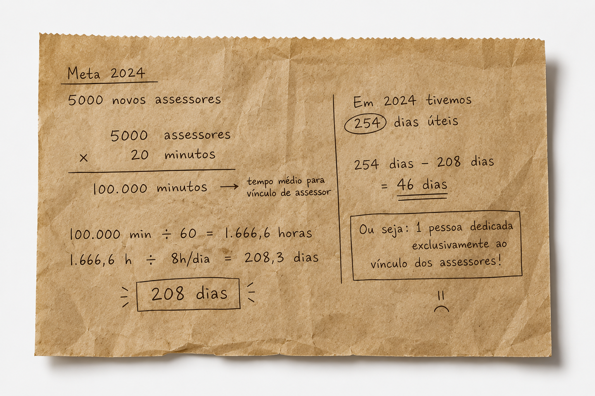
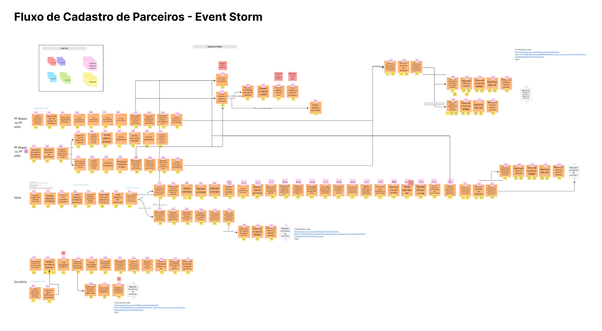
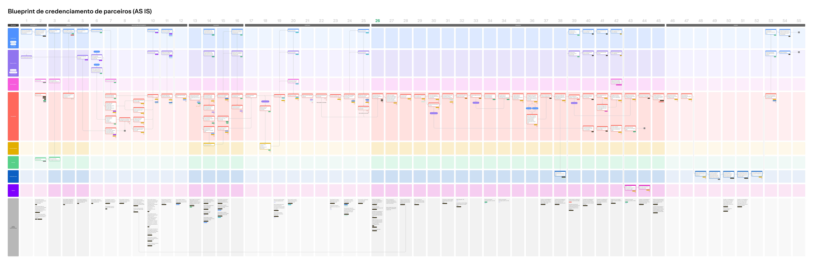
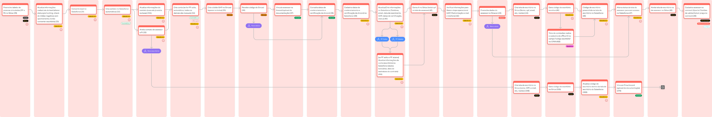
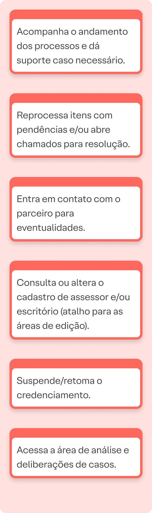
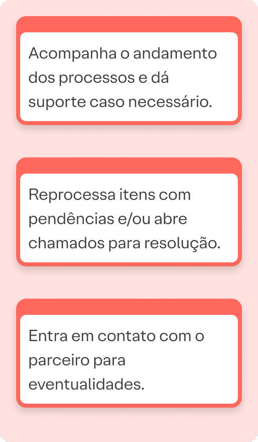
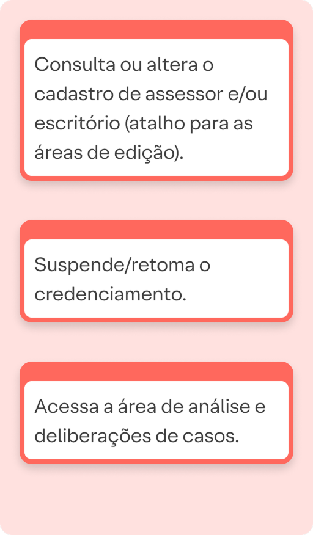
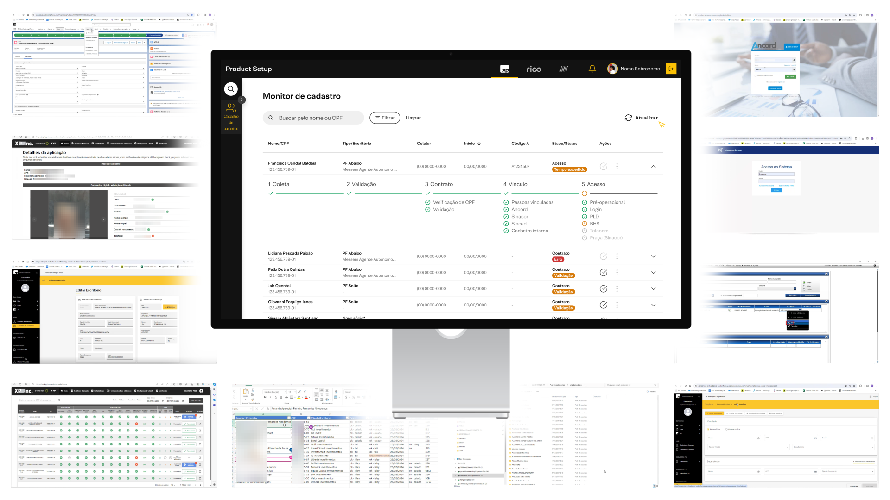
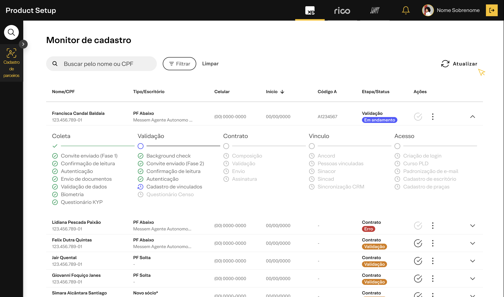
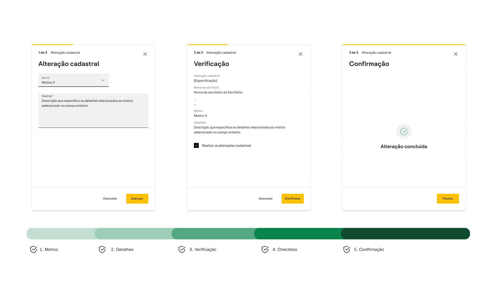

Redesenhando o onboarding
de parceiros B2B
Como transformamos um processo
operacional complexo
em uma experiência escalável.
XP Inc.
Product Design
O desafio
O crescimento da XP tornou o processo
de onboarding incompatível
com a nova escala.
11
sistemas
87
etapas
60
ações manuais
20
minutos para vincular
17
dias para concluir
O onboarding não atendia
apenas um usuário.
Precisava conectar um ecossistema inteiro.
O ecossistema
- Parceiro
- Operações
- Compliance
- Jurídico
- Produto
- Tecnologia
- Sistemas internos
- Cliente final

assets/papel-amassado.png
O que realmente precisava
ser resolvido?
Como responder essa pergunta?
- Entender o serviço
- Alinhar especialistas
- Visualizar o sistema
- Validar hipóteses
- Construir uma estratégia
Entrevistas · Event Storm · Blueprint · Experiência

O problema não era
cadastrar parceiros.
O problema era orquestrar
todas as partes.

O que aprendemos
- Fragmentação da experiência
- Regras próprias em cada sistema
- Múltiplas fontes de verdade
- Trabalho majoritariamente operacional
- Usuário forçado a entender o backstage
Estratégia
Quatro princípios
- Centralizar Unificar a jornada
- Automatizar Eliminar o repetitivo
- Guiar Conduzir o usuário
- Monitorar Visibilidade operacional
Entrega
Três frentes
-
Coleta de Dados
Autenticação e entrada
-
Experiência de Cadastro
Micro jornadas e validações
-
Monitor de Cadastro
Vínculo e visibilidade
Antes

AS ISDepois

TO BEDepois




Resultados
Sistemas
11 6
Etapas
87 59
Ações manuais
60 32
Vínculo
20 min 2 min
Conclusão
17 dias 5 dias
O que mudou para a empresa?
Parceiros
↓
Menos espera
Operações
↓
Menos trabalho manual
Compliance
↓
Mais rastreabilidade
Produto
↓
Base preparada para evoluir
Negócio
↓
Escalabilidade

Como contribuí para essa transformação
- 01 Estruturei a investigação
- 02 Facilitei o alinhamento
- 03 Transformei conhecimento distribuído em arquitetura
- 04 Conectei Produto, Tecnologia, Compliance e Operações
- 05 Conduzi a evolução da experiência
Obrigado
Eduardo Damasceno
LinkedIn